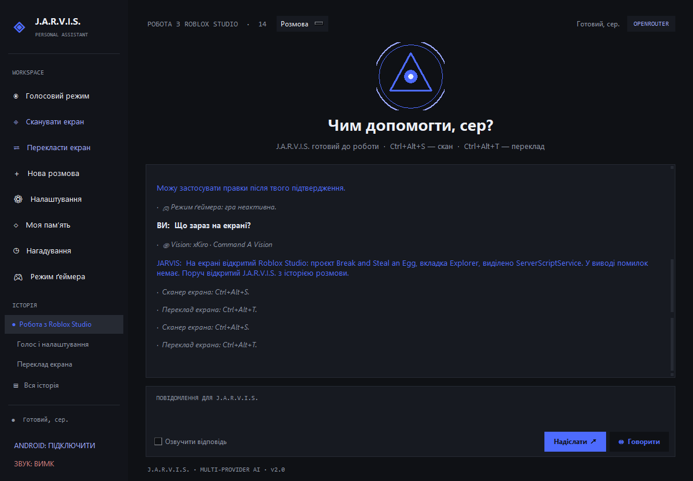

Голосове керування
Розпізнавання української та англійської, природний нейроголос, Ctrl+Alt+J на Windows, а також wake word «Hey Jarvis» і до трьох реплік продовження діалогу без натискання кнопки.
Десктопний AI-асистент для Windows, macOS і Linux: голос, чат, плагіни, зір екрана й переклад. На Windows — ще й повне керування ПК та Roblox Studio. Без підписки.

Джарвіс з'єднує модель із твоєю системою: голос, файли, програми, екран і Roblox Studio. Ти питаєш — він робить.
Розпізнавання української та англійської, природний нейроголос, Ctrl+Alt+J на Windows, а також wake word «Hey Jarvis» і до трьох реплік продовження діалогу без натискання кнопки.
На Windows: запуск програм голосом, файли, вікна, гучність, медіа й PowerShell-команди з підтвердженням небезпечних дій.
Читає дерево проєкту, редагує скрипти, запускає тести й перезапускає приватний сервер через офіційний Studio MCP. Лише Windows.
Натисни Ctrl+Alt+S на Windows або кнопку в бічній панелі: Джарвіс знімає екран і пояснює, що бачить — гру, помилку, код чи інтерфейс.
Ctrl+Alt+T на Windows або кнопка в бічній панелі зчитує текст на екрані й накладає переклад поверх оригіналу.
Кинь .py-файл у %APPDATA%\Jarvis\plugins — і Джарвіс отримує нові інструменти: нотатки, погода, курси, статистика ПК.
Увімкни — і всі запити йдуть лише до локальної Ollama. Хмарні ключі ігноруються. Для голосу можна підключити whisper.cpp і Piper; без них офлайн лишається текстовим.
Локальні хеш-embeddings знаходять релевантні записи за змістом, а не за датою. Нічого не надсилається в мережу.
Розклади once/daily/weekly/every: асистент сам надішле запит або нагадає голосом. Без свавільних shell-команд.
Локальний каталог із SHA256, переглядом коду й явним підтвердженням. Без авто-встановлення й без сервера.
Підключи Home Assistant через URL і токен: світло, розетки, датчики й сцени голосом.
Джарвіс визначає запущену гру й переходить на тихі підказки у кутку, не забираючи фокус. Лише Windows.
Обрана модель іде першою. Якщо ключ мертвий або провайдер лежить, Джарвіс тихо перемикається на наступний. Ти не бачиш помилку посеред задачі.
Версія 2.1 перебудувала інтерфейс навколо реальної роботи: черга завдань, вкладення, вибір моделі й режиму та composer, який не заважає.
Чат, історія, голос, зір і переклад в одному вікні. Без вкладок, без браузера, без зайвого.
Українська озвучка, реальні скріншоти й повний розбір: голос, фейловер моделей, керування ПК, Roblox Studio, зір екрана, переклад, плагіни, приватність і три платформи.
Плагіни — це звичайний Python. Кинь файл у папку плагінів, перезавантаж — і модель одразу бачить новий інструмент та може його викликати.
# Мінімальний плагін: одна дія, один інструмент.
TOOLS = [{
"type": "function",
"function": {
"name": "hello_plugin",
"description": "Привітатися з користувачем.",
"parameters": {
"type": "object",
"properties": {
"name": {"type": "string"}
},
},
},
}]
def run(name, args, ctx):
if name == "hello_plugin":
who = (args.get("name") or "сер").strip()
return f"Привіт, {who}! Це локальний плагін Jarvis."
return "Невідомий інструмент."Плагіни отримують ctx.confirm, ctx.log, ctx.run, ctx.cfg і шляхи до даних. Вони виконуються локально, з твоїми правами.
Кожен білд перевіряється на Windows 11 перед тим, як потрапити до кнопки завантаження.
Повна roadmap →Jarvis працює на Windows, macOS і Linux. Налаштування, чати й плагіни лежать у папці даних користувача, тому оновлення не стирають інформацію.
Завантаж JARVIS-Setup.exe (близько 96 МБ), запусти майстер і обери ярлики.
Відкрий Налаштування, встав хоча б один API-ключ (Gemini, Groq, OpenRouter або xKiro) і натисни Зберегти. Безкоштовних тарифів вистачить для старту.
Натисни Ctrl+Alt+J або кнопку мікрофона й скажи: «відкрий Roblox Studio». Або пиши в чаті. Готово.
Завантаж JARVIS-macOS.zip для Apple Silicon або JARVIS-macOS-Intel.zip для Intel Mac (близько 76 МБ) і розпакуй. Усередині — JARVIS.app.
Перетягни JARVIS.app у /Applications. Не запускай прямо з папки Завантажень.
Клікни правою кнопкою по JARVIS.app → Open. Якщо macOS все одно блокує: xattr -dr com.apple.quarantine /Applications/JARVIS.app
Відкрий Налаштування, встав один ключ (Gemini, Groq, OpenRouter або xKiro), збережи й дозволь доступ до мікрофона.
Завантаж JARVIS-Linux.tar.gz (близько 105 МБ).
tar -xzf JARVIS-Linux.tar.gz && chmod +x JARVIS
Ubuntu/Debian: sudo apt install libportaudio2 libasound2. Fedora: sudo dnf install portaudio alsa-lib.
Запусти ./JARVIS, відкрий Налаштування, встав один API-ключ, збережи. Готово.
Повний набір — на Windows: керування ПК, глобальні гарячі клавіші, ґеймерський оверлей і Roblox Studio. На macOS і Linux доступні чат, голос, плагіни, зір екрана, переклад і Home Assistant; керування системою обмежене.
Приклади реальних задач, а не відгуки. Спробуй і напиши, що вийшло.
«Відкрий Studio, знайди обробник яєць і поясни баг із Touched.»
«Переклади текст на цьому скріншоті й залиш оригінал поруч.»
«Яка завтра погода і який сьогодні курс долара?»
Відгуки — це публічні GitHub issues. Сайт лише читає те, що написали користувачі: без вигаданих відгуків і тихого редагування.
Обери свою систему. Без акаунта й підписки: інсталятор для Windows, архіви для macOS і Linux. Ключі та чати залишаються на твоєму ПК.
Windows 10/11 x64 · інсталятор .exe
macOS 11+ · Apple Silicon · .zip
Linux x86_64 · .tar.gz
PRO Пріоритетні білди, кастомні плагіни й персональне налаштування — через GitHub issues.
Два короткі вертикальні відео: екскурсія сайтом і нові фічі 2.3.0. Завантаж MP4 або дивись у TikTok.
Огляд сайту · 30.9 с
Завантажити MP4 Дивитись у TikTok →Буфер, брифінг, HUD, Telegram · 31.2 с
Завантажити MP4 Дивитись у TikTok →GitHub · TikTok
GitHub TikTok →Збірки не мають комерційного підпису. Натомість кожен реліз публікує SHA256-хеші та GitHub build provenance — так можна перевірити, що файл зібраний із цього репозиторію в GitHub Actions.
Він лежить у тому самому GitHub-релізі, що й збірка. Не бери хеші зі сторонніх дзеркал.
Відкрити SHA256SUMS.txtGet-FileHash .\JARVIS-Setup.exe -Algorithm SHA256shasum -a 256 JARVIS-macOS.zipsha256sum JARVIS-Linux.tar.gzПортативний JARVIS-Windows.exe з релізу має build provenance від workflow цього репозиторію. Сам інсталятор зібраний локально й атестації не має — звіряй його за SHA256.
gh attestation verify JARVIS-Windows.exe --repo __GITHUB_REPOSITORY__Повний гід із підпису й перевірки збірок →
Так, хоча б один. У Gemini, Groq, OpenRouter і xKiro є безкоштовні тарифи. Додай кілька ключів — і Джарвіс перемикатиметься автоматично, якщо один не працює.
Так, увімкни в Налаштуваннях. З openWakeWord wake word працює офлайн; без нього Джарвіс використовує VAD + Google STT, потрібен інтернет. Після відповіді він слухає ще до трьох реплік.
Так. Чат, голос, плагіни, зір екрана, переклад і Home Assistant працюють на всіх трьох системах. Повне керування ПК, глобальні гарячі клавіші, ґеймерський оверлей і Roblox Studio — лише Windows. macOS-збірки є для Apple Silicon і Intel, Linux — x86_64.
Локально в папці даних Jarvis: %APPDATA%\Jarvis на Windows, ~/Library/Application Support/Jarvis на macOS, ~/.local/share/Jarvis на Linux. Вони надсилаються лише обраному AI-провайдеру — сервера Jarvis не існує.
Так, із локальними моделями Ollama. Увімкни офлайн-режим у Налаштуваннях — і всі запити йдуть до Ollama, а хмарні ключі ігноруються. Голос теж може працювати офлайн, якщо вказати шляхи до whisper.cpp і Piper та їхніх моделей. Без них розпізнавання мовлення потребує інтернету.
Записи індексуються локально детермінованими хеш-embeddings. Коли ти щось питаєш, Джарвіс вибирає вісім найрелевантніших записів за змістом і додає до запиту лише їх. Жодних завантажень нейромережі чи мережевих запитів.
Так. Скажи «створи автоматизацію» або відкрий вкладку «Автоматизації»: once, daily, weekly або кожні N хвилин. Дія може надіслати запит асистенту або нагадати голосом. Автоматизації не виконують свавільні shell-команди.
Він чесний, але не чарівний. Реєстр — локальний JSON-файл, кожен плагін звіряється з SHA256, а встановлення завжди просить підтвердження. Плагін усе одно працює з тими самими правами, що й Джарвіс, тож читай код перед встановленням.
Небезпечні дії потребують підтвердження. Повний доступ можна вимкнути в Налаштуваннях. Код відкритий, тож кожен інструмент можна перевірити до запуску.
Ні. Джарвіс використовує офіційний Studio MCP і звичайні API Studio. Він не втручається в клієнт Roblox і не використовує експлойти.
Завантаж нову збірку для своєї системи й заміни старий файл або застосунок. Конфіг, чати й плагіни лежать у папці даних Jarvis і не постраждають.
Застосунок непідписаний. Клікни правою кнопкою по JARVIS.app → Open. Якщо Gatekeeper все одно блокує, виконай у Terminal: xattr -dr com.apple.quarantine /Applications/JARVIS.app
Так. Поклади .py-файл із TOOLS і run(name, args, ctx) у %APPDATA%\Jarvis\plugins, потім скажи «перезавантаж плагіни».